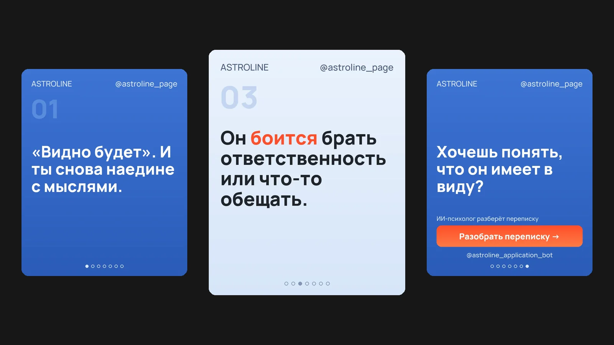

ASTRA
ИИ-агент, который ведёт Telegram-канал приложения Astroline: сам предлагает темы на неделю, пишет посты для четырёх соцсетей, рисует фирменные карусели и публикует их по расписанию. От владельца нужно одно – нажать «Одобрить».

Задача
Каналу приложения нужен регулярный контент, иначе продукт никто не видит. Но писать посты каждый день, подстраивать текст под каждую соцсеть и оформлять картинки – это несколько часов в неделю ручной работы. Нужен помощник, который делает всё сам, а человек только проверяет и одобряет.
Как работает
- Понедельник, утро: ASTRA присылает план на 7 дней – тема и польза для читателя на каждый день. Темы подбирает в том числе по комментариям подписчиков
- Одобрение: кнопка «Одобрить и генерировать» – и агент пишет посты, кнопка «Изменить темы» – и он предлагает другие
- Тексты под каждую площадку: для Telegram, Instagram, Facebook и Threads свой формат, длина и хештеги. Второй проход «редактора» убирает канцелярит и проверяет «ё»
- Фирменные карусели: 7 слайдов в палитре приложения, одна законченная мысль на слайд, на финальном – кнопка «Разобрать переписку →»
- Публикация: каждый пост одобряется кнопкой «В канал» и выходит в 10:00 своего дня
- Комментарии: агент отвечает подписчикам в обсуждении, а чувствительные темы (здоровье, деньги, конфликты) не трогает публично и передаёт владельцу
Качество и безопасность
- Тексты проверяются кодом: голос бренда без выдуманного «ко мне приходят клиентки», без психологических ярлыков и обобщений вида «все мужчины»
- Если фраза на слайде режется на полуслове или ссылка на приложение потерялась – пост перегенерируется автоматически
- Комментарии подписчиков хранятся 90 дней и удаляются автоматически; имена и ники не сохраняются